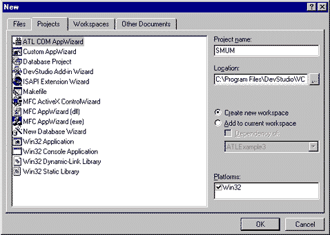
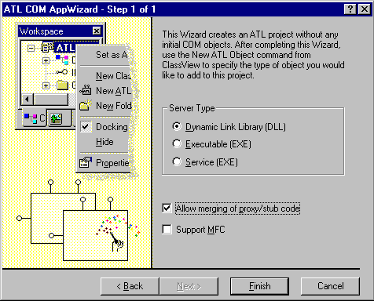
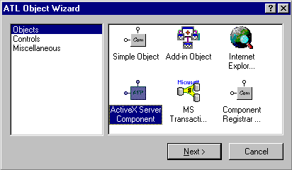
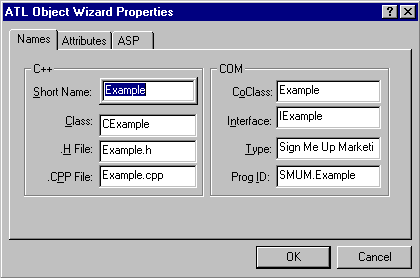
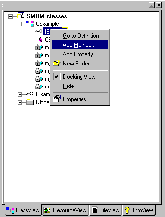
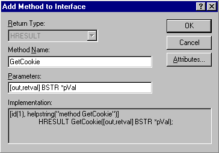

|
| ||
|
| ||
Wayne Berry
Editor, 15 Seconds
June 1997
Contents
Introduction
Step 1: Creating an ATL project
Step 2: Adding an Active Server Component
Step 3: Creating a method
Step 4: Making it work
Step 5: Adding the component to an ASP page
The first in a four-part series, this article provides a simple example of how to create an Active Server Component in Visual Studio™ 97 using the Active Template Library (ATL) version 2.0 and Microsoft Visual C++® version 5.0. The Active Server Component works with Active Server Pages (ASP) as an extension of Active Server. When placed within an ASP page, the component we are going to create will get the user's cookie, or assign a cookie if the user doesn't have one.
If you are still using Microsoft Visual C++ version 4.2, we recommend you upgrade to Microsoft Visual Studio 97, which makes COM objects much easier to program.
If you don't plan to use ASP technologies, you may want to consider using a simple object, instead. Please see the discussion at the end of this article.
Creating an Active Server Component consists of five steps. If you have already installed Visual Studio 97, you can get started right away.
The first step in building an Active Server Component is to create an ATL project. We will create the ATL project using the ATL COM AppWizard. The code produced by the wizard is nothing more than a DLL shell, with the ability to register the objects that will be defined later, to create those objects through a class factory, and to build a DllMain that supports the DLL shell. The shell by itself is not an Active Server Component. The shell is a holder for many Active Server Components. These components share the same code that is available in the shell and can share functionality between them, since they exist in the same DLL.

Figure 1. New project

Figure 2. ATL COM AppWizard - Step 1 of 1
The second step is to add an Active Server Component to the shell. This is done using the ATL Object Wizard.

Figure 3. ATL Object Wizard

Figure 4. ATL Wizard Object Properties
The ATL Object Wizard creates these files:
The wizard also adds code describing the interface of the Example object to the project's SMUM.IDL.
When the ATL Object Wizard creates an Active Server Component, it adds by default the member variables that interface with the Application, Request, Response, Server, and Session objects.
Now we will implement a method to get and set a cookie. First, we need to add a method called GetCookie to the Example interface.

Figure 5. Adding a method in the Project view

Figure 6. Adding a method to the interface
By using Visual Studio 97 to add a method in the Project view, you automatically insert the interface description into the *.IDL file, and supporting code for the class is generated.
Now we are going to add the functionality to the GetCookie method created in step 3. This method gets the current cookie; if not available, it creates a cookie and returns its value.
To quickly find the section of code where Visual Studio added the method, expand the project in the Project window, expand the IExample interface, and double-click on the GetCookie method. Add the following code:
STDMETHODIMP CExample::GetCookie(BSTR * pVal)
{
GUID guid;
TCHAR lpszCookie[25];
VARIANT varOptional;
HRESULT hr;
// Check the Pointer
if (pVal==NULL)
return E_POINTER;
// Optimistically set the Returning
// HRESULT
hr=S_OK;
// Configure the Optional Variant
// This configuration follows
// the documentation for the
// Active Server Object Interfaces
V_ERROR(&varOptional) == DISP_E_PARAMNOTFOUND;
// Check to make sure all the interfaces
// loaded correctly. This is the part
// that would fail if you called this
// object from Visual Basic.
if (m_bOnStartPageCalled)
{
// Allocate the Request Dictionary Objects
// so that we can pass them to the Active
// Server Object Interfaces
CComPtr<IRequestDictionary> piReadDict;
CComPtr<IRequestDictionary> piWriteDict;
// Pointer to the Write Cookie Interface
IWriteCookie *piWriteCookie;
// From the Request Interface retrieve
// a Dictionary of Cookies
hr=m_piRequest->get_Cookies(&piReadDict);
if (FAILED(hr))
return hr;
// Allocate and set Variants to pass to
// the dictionary
CComVariant vtIn(_T("GUID"));
CComVariant vtOut;
// Get the Cookie from the dictionary
// named SMUMID and put it in vtOut
hr = piReadDict->get_Item(vtIn, &vtOut);
if (FAILED(hr))
return hr;
// vtOut contains an IDispatch Pointer.
// To fetch the value for the cookie, you
// must get the Default Value for the
// Object stored in vtOut using VariantChangeType.
hr = VariantChangeType(&vtOut, &vtOut, 0, VT_BSTR);
if (FAILED(hr))
return hr;
// If the Cookie isn't set then
// the length of vtOut will be 0
if (!wcslen(V_BSTR(&vtOut)))
{
// There isn't a Cookie assigned
// so we have to create one.
// Use a GUID for the Unqiue User Cookie
CoCreateGuid(&guid);
// Put the GUID into a String
wsprintf(lpszCookie,
_T("%X%X%X%X%X%X%X%X%X%X%X"),
guid.Data1,
guid.Data2, guid.Data3,
guid.Data4[0], guid.Data4[1],
guid.Data4[2], guid.Data4[3],
guid.Data4[4], guid.Data4[5],
guid.Data4[6], guid.Data4[7]);
// Create a Variant from the String
CComVariant vtCookieValue(lpszCookie);
// Get the writable Cookie Dictionary
// from the Response Object. Notice
// that it is the Response Object and
// not the Request Object like above.
hr=m_piResponse->get_Cookies(&piWriteDict);
if (FAILED(hr))
return (hr);
// Get the Writable Interface for
// the GUID cookie from the Cookie Dictionary
// Notice here that the GUID cookie
// doesn't exist in the dictionary, but we
// can still ask for its interface
hr = piWriteDict->get_Item(vtIn, &vtOut);
if (FAILED(hr))
return(hr);
// Make it easy on ourselves, get and cast
// the IDistpach value to the dual interface
// that we want to call
piWriteCookie = (IWriteCookie*)(vtOut.ppdispVal);
// Create the Cookie using the Name GUID and the Value of
// the GUID that we generated
hr = piWriteCookie->put_Item(varOptional,
V_BSTR(&vtCookieValue));
if (FAILED(hr))
return(hr);
// Create an Expiration Date sometime in the future
// To keep the example simple, I am using my birthday
// in 2010. 10/4/2010. Some other time, we will show
// how to generate a VB DATE (double) without MFC.
DATE dtExpiration=40455.0;
// This is required if you want the browser
// to retain the cookie between sessions
hr = piWriteCookie->put_Expires(dtExpiration);
if (FAILED(hr))
return(hr);
// Assign the out,retval
*pVal = ::SysAllocString(V_BSTR(&vtCookieValue));
// A little help for Debugging
ATLTRACE (_T("Setting Cookie to: %s\n"),
V_BSTR(&vtCookieValue));
}
else
{
// Assign the out,retval
*pVal = ::SysAllocString(V_BSTR(&vtOut));
// A little help for Debugging
ATLTRACE (_T("Cookie was set to: %s\n"),
V_BSTR(&vtOut));
}
}
return hr;
}
Once you have added the code, build the DLL. After compilation and linking, Visual Studio will register the DLL. If you have Internet Information Server (IIS) installed, you can now use the component.
The last step is to add the component you just built to your ASP page.
Here is the right way to call the Active Server Component. Notice that the cookie header precedes the <HTML> and <BODY> tags.
<%
' Here is where the OnStartPage method is called
Set Example=Server.CreateObject("SMUM.Example.1")
'Here is the method call to assign the cookie
Cookie = Example.GetCookie()
%>
<HTML>
<BODY>
<%=Cookie%>
</BODY>
</HTML>
When setting cookies, you must always assign the cookie header before the main body (<HTML> and <BODY> tags) of your page. For instance, this is the wrong way to send the code:
<HTML>
<BODY>
<%
Set Example=Server.CreateObject("SMUM.Example.1")
' The Cookie Header is set with this
' call if a cookie doesn't exist,
' which is too late since some of the body text has
' been sent already.
Cookie = Example.GetCookie()
%>
The Cookie is : <%=Cookie%>
</BODY>
</HTML>
We just ran through the steps to create an Active Server Component using the ATL Object Wizard, which inserted code and created files to support the COM object named Example. This is the same code that the wizard would have created if we had chosen to create a simple object.
Simple objects are sometimes more appropriate for large projects if you plan to use the same object over and over, and that object won't require access to Active Server Component interfaces (Application, Request, Response, Server, and Session). When creating an Active Server Component, the wizard adds code to access those interfaces. This is convenient only if the component is going to be used in an Active Server environment.
If you want to create a customer object based on a cookie, you can call an Active Server Component from an ASP page; for example:
Set Creator=Server.CreateObject("SMUM.CustomerCreator.1")
Set Customer = Creator.CreateCustomer
Customer.EmailAddress = "webmaster@signmeup.com"
The cookie call to the Request object is hidden from the ASP developer. When the CustomerCreator object performs the CreateCustomer method, the cookie value is retrieved from the Request interface within the CustomerCreator object. If the user does not currently have a cookie, the Creator object also sets the cookie in the Response interface. Finally, the e-mail address is written to a database, with the cookie serving as the primary key.
Consider this example in which the Creator object is a simple object instead of an Active Server Component.
Set Creator=Server.CreateObject("SMUM.CustomerCreator.1")
Set Customer = Creator.CreateCustomer(Request.Cookies("SMUMID"))
Response.Cookies("SMUMID") = Customer.Cookie
Customer.EmailAddress = "webmaster@signmeup.com"
In this example, we have to pass the cookie in the Creator object and assign the cookie once we have created the Customer object. This technique makes more work for the programmer. If it is more work, why is it better to create a simple object? The answer lies within the scope of the project.
For instance, once all the e-mail addresses have been collected from the Web site, you may want to view each customer address from your desktop. With the simple object, you can create a Visual Basic® application that views each e-mail address in turn. However, you cannot call the Active Server Component from Visual Basic, because the instantiation of the Active Server interfaces would fail.
Simple objects can be called from Visual Basic and from ASP pages; Active Server Components can be called only from ASP pages. For a little more work, you can get a lot more use out of your object.
Wayne Berry is the editor of 15 Seconds  , an online publication written for Internet developers and content providers about IIS, ISAPI, and Active Server. For more information about 15 Seconds, contact the Webmaster.
, an online publication written for Internet developers and content providers about IIS, ISAPI, and Active Server. For more information about 15 Seconds, contact the Webmaster.
Did you find this material useful? Gripes? Compliments? Suggestions for other articles? Write us!
© 1999 Microsoft Corporation. All rights reserved. Terms of use.